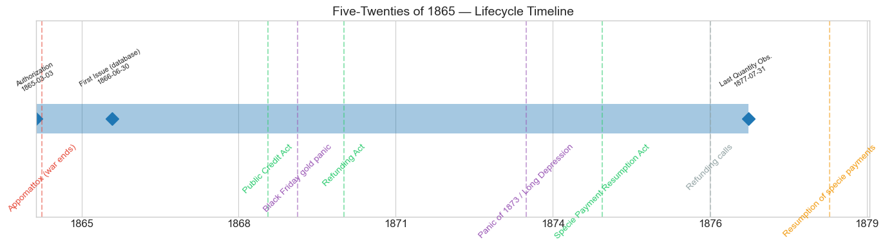
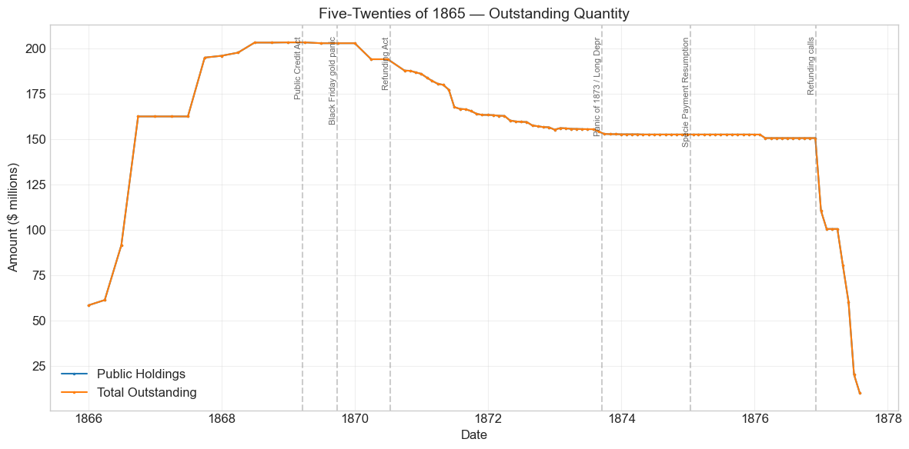
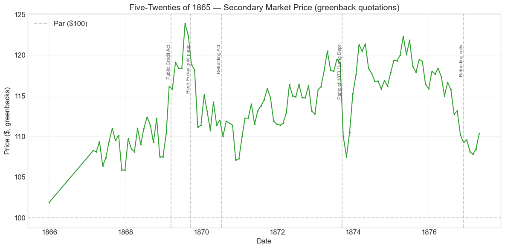
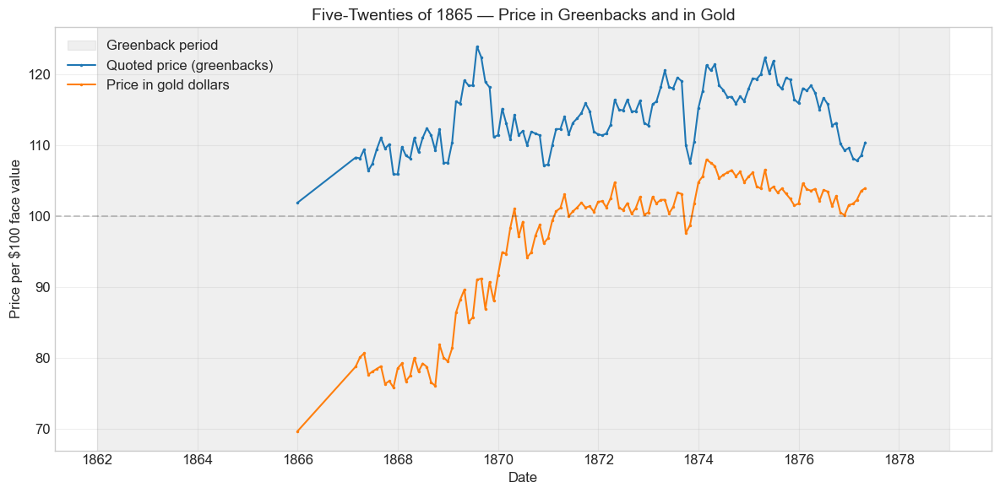
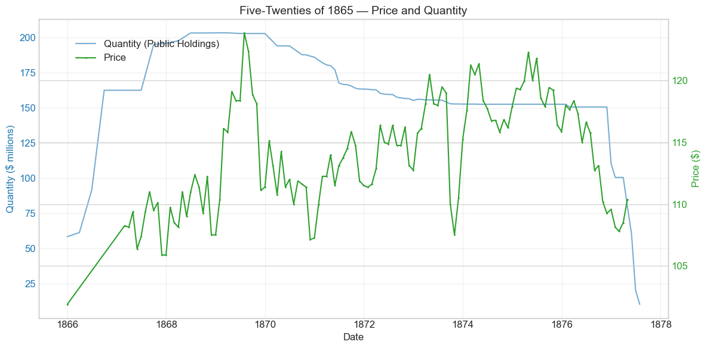
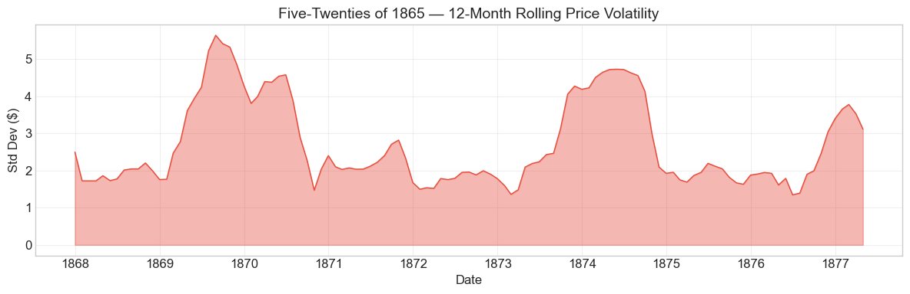

Bond Biography: Five-Twenties of 1865#
Paying for the Peace: The Last Cash Loan of the Civil War#
Enhanced from the Hall-Payne-Sargent US Federal Bond Database (2,857 issues, 1776–1960)
Bond ID (L1): 20113 Category: Interest Bearing > Marketable > Long Term Bond Coupon: 6% semi-annual, payable in coin Term: 5-year call / 20-year maturity (“five-twenty”) Authorization: Act of March 3, 1865
Armies are expensive to raise, and almost as expensive to send home. The Five-Twenties of 1865 were the bonds the Treasury sold for money — not swapped for notes — to pay the bills of a war that was ending.
Data note. Quotations from the start of the series to December 1878 are prices in greenbacks, while the coupons of these bonds (and, after the Public Credit Act of 18 March 1869, their principal) were payable in coin. Price movements before resumption therefore mix the gold premium with credit news.
import pandas as pd
import numpy as np
import matplotlib.pyplot as plt
import matplotlib.patches as mpatches
import datetime
import warnings
warnings.filterwarnings('ignore')
plt.style.use('seaborn-v0_8-whitegrid')
plt.rcParams.update({'figure.figsize': (12, 6), 'font.size': 12,
'axes.titlesize': 14, 'axes.labelsize': 12})
# Load the bond database
store = pd.HDFStore('../data/BondDF.h5', mode='r')
BondList = store['BondList']
BondQuant = store['BondQuant']
BondPrice = store['BondPrice']
store.close()
BondQuant_T = BondQuant.transpose()
BondPrice_T = BondPrice.transpose()
bond_id = 20113
print(f'Loaded data for: Five-Twenties of 1865 (ID: 20113)')
/Users/thomassargent/anaconda3/lib/python3.9/site-packages/pandas/core/arrays/masked.py:60: UserWarning: Pandas requires version '1.3.6' or newer of 'bottleneck' (version '1.3.5' currently installed).
from pandas.core import (
Loaded data for: Five-Twenties of 1865 (ID: 20113)
Overview#
The Five-Twenties of 1865 was authorized under the Act of March 3, 1865. The database records its coupon rate as 6.0 percent, payable semi-annually in coin, with the five-twenty structure that had defined Union war finance since 1862: redeemable at the government’s pleasure after five years (the database’s “redeemable after” date is November 1, 1870), payable at twenty (November 1, 1885). During its lifetime on the secondary market, the bond’s average price was $113.87, ranging from $101.88 to $123.88 (124 monthly observations from December 1865 to April 1877). Peak outstanding reached $203.33 million on December 31, 1868 — a figure that matches, to the dollar, Bayley’s (1881) recorded total issue of $203,327,250 for this loan.
Every earlier five-twenty had been a creature of the war’s darkest hours. This one was a creature of the war’s end. The Act of March 3, 1865 — the last great loan act of the Civil War, signed by Lincoln six weeks before Appomattox and six weeks before his death — authorized a further $600 million of borrowing, in bonds or Treasury notes, at the discretion of the Secretary. The act arrived amid a change of command at the Treasury. William Pitt Fessenden, who had succeeded Salmon Chase in July 1864 and steadied the Treasury through the war’s costliest year (it was Fessenden who launched the great 7-30 note campaigns), left in March 1865 to return to the Senate. His successor, Hugh McCulloch — the former Comptroller of the Currency who had administered the new national banking system — took office on March 9, 1865, and inherited a peculiar problem: the fighting was ending, but the spending was not. Roughly a million men had to be paid off and mustered out; contractors’ claims had to be settled; and a mountain of maturing short-term paper — temporary loans, certificates of indebtedness, compound-interest notes — had to be met with cash.
The bonds sold to meet those bills became the Five-Twenties of 1865. What makes this issue’s story distinctive is a distinction that the Treasury’s own books preserve and that this database inherits: under the same Act of March 3, 1865, the government created both bonds that were sold for money and bonds that were swapped into existence in exchange for maturing 7-30 notes. The swapped bonds are the Consols of 1865, 1867, and 1868 (Bonds 20114–20116), whose chapters tell the story of the great postwar funding-by-conversion. This chapter tells the other half: the last time the Civil War Treasury went to the market and asked for cash.
Historical Context#
The following major events occurred during this bond’s lifetime:
Date |
Event |
Category |
|---|---|---|
1865-04-09 |
Lee surrenders at Appomattox; war ends |
War |
1865-05-23 |
Grand Review; demobilization of the Union armies begins |
Fiscal |
1865-08-31 |
Federal debt reaches its Civil War peak (~$2.8 billion) |
Fiscal |
1869-03-18 |
Public Credit Act |
Legislation |
1869-05-10 |
Transcontinental Railroad completed |
Other |
1869-09-24 |
Black Friday gold panic |
Crisis |
1870-07-14 |
Refunding Act (amended January 20, 1871) |
Legislation |
1873-09-18 to 1879-03-01 |
Panic of 1873 / Long Depression |
Crisis |
1875-01-14 |
Specie Payment Resumption Act |
Legislation |
1876–1877 |
Six per cent five-twenties of 1865 called and refunded |
Fiscal |
1879-01-01 |
Resumption of specie payments |
Monetary |
Reading the prices: greenback quotations#
The caution that applies to every Civil War-era bond in this database — developed at length in the Five-Twenties of 1862 chapter (Bond 20101) — applies here in full. Through the end of this bond’s quoted life, market prices are in greenbacks, while the coupons (and, after 1869, unambiguously the principal) were payable in gold coin. A greenback price of 113 therefore mixes two things: the bond’s value as a claim on gold, and the depreciated state of the greenback itself. In December 1865, with gold commanding a premium of roughly 45 percent over paper, this bond’s opening quotation of $101.88 corresponded to a price well below par in gold. Much of the decade-long rise in the quoted price is the slow squeezing-out of that currency wedge as the greenback appreciated toward the parity finally achieved with resumption on January 1, 1879.
Black Friday, September 24, 1869#
When Jay Gould and James Fisk’s attempt to corner the gold market collapsed on “Black Friday,” every security tied to the gold–greenback exchange rate convulsed. This bond had just touched its all-time greenback peak of $123.88 in July 1869, riding the Public Credit Act rally; it slid to $118.88 by the end of September and to $111.12 by November — a fall of roughly 10 percent from the summer peak. As with its sister issues, the move was a currency event, not a credit event: the gyrations of the gold premium and the forced liquidations of leveraged houses in the panic’s aftermath repriced the greenback, not the Treasury’s promise. Prices did not regain the 1869 peak until the deflationary mid-1870s.
The Panic of 1873 and the Long Depression#
The failure of Jay Cooke & Co. in September 1873 triggered a general scramble for cash, and holders sold their most liquid assets first — government bonds among them. The database shows this issue dropping from $119.00 in August 1873 to $107.50 in October, a decline of nearly 10 percent in two months. The recovery was almost as fast: $115.25 by December 1873, and on to the neighborhood of $122 by mid-1875. In the depression that followed, a 6 percent gold-interest government bond was exactly what frightened capital wanted; the bond’s later price decline toward the 108–110 range in 1876–77 reflects not distress but the approach of the call — the standard fate of a callable premium bond once redemption at par becomes imminent.
# Bond Lifecycle Timeline
fig, ax = plt.subplots(figsize=(14, 4))
# Key dates
dates = [('Authorization', '1865-03-03'), ('First Issue (database)', '1866-06-30'), ('Last Quantity Obs.', '1877-07-31')]
events = [('Appomattox (war ends)', '1865-04-09', 'war'),
('Public Credit Act', '1869-03-18', 'legislation'),
('Black Friday gold panic', '1869-09-24', 'crisis'),
('Refunding Act', '1870-07-14', 'legislation'),
('Panic of 1873 / Long Depression', '1873-09-18', 'crisis'),
('Specie Payment Resumption Act', '1875-01-14', 'legislation'),
('Refunding calls', '1876-12-01', 'other'),
('Resumption of specie payments', '1879-01-01', 'monetary')]
import matplotlib.dates as mdates
from datetime import datetime
# Plot bond lifetime bar
d0 = datetime.strptime(dates[0][1], '%Y-%m-%d')
d1 = datetime.strptime(dates[-1][1], '%Y-%m-%d')
ax.barh(0, (d1 - d0).days, left=mdates.date2num(d0), height=0.3,
color='#1f77b4', alpha=0.4, label='Bond Lifetime')
# Mark key dates
for label, date_str in dates:
d = datetime.strptime(date_str, '%Y-%m-%d')
ax.plot(mdates.date2num(d), 0, 'D', color='#1f77b4', markersize=10)
ax.annotate(f'{label}\n{date_str}', (mdates.date2num(d), 0.25),
ha='center', va='bottom', fontsize=8, rotation=30)
# Mark historical events
colors = {'war': '#e74c3c', 'crisis': '#9b59b6', 'legislation': '#2ecc71', 'other': '#95a5a6', 'monetary': '#f39c12'}
for name, date_str, cat in events:
d = datetime.strptime(date_str, '%Y-%m-%d')
ax.axvline(mdates.date2num(d), color=colors.get(cat, 'gray'), alpha=0.5, linestyle='--')
ax.annotate(name, (mdates.date2num(d), -0.25), ha='center', va='top',
fontsize=10, rotation=45, color=colors.get(cat, 'gray'))
ax.set_yticks([])
ax.xaxis.set_major_formatter(mdates.DateFormatter('%Y'))
ax.set_title('Five-Twenties of 1865 — Lifecycle Timeline')
ax.set_ylim(-1, 1)
plt.tight_layout()
plt.show()

Bond Features#
Feature |
Detail |
|---|---|
Name |
Five-Twenties of 1865 |
Authorizing Act |
March 3, 1865 |
Authorization Date |
March 3, 1865 |
First Issue Date (database) |
June 30, 1866 |
Term |
5 or 20 yrs (five-twenty) |
Redeemable After |
November 1, 1870 |
Payable |
November 1, 1885 |
Coupon Rate |
6.0%, payable in coin |
Payment Frequency |
Semi-annual (May and November) |
Callable |
Yes (after 5 years, at par) |
Payable in Coin |
Yes (coupons; principal confirmed by Public Credit Act of 1869) |
Price Sold (database) |
1.02547 (~$102.55 per $100, in greenbacks) |
Peak Outstanding |
$203.33 million (December 31, 1868) |
Disposition |
Called and refunded, 1876–1877 |
Three features anchor the bond’s identity. First, the coupon months of May and November and the redeemable/payable dates of November 1, 1870 and November 1, 1885 mark this as the five-twenty series dated from November 1865 — the vintage the Treasury’s records call the Five-Twenties of 1865, distinct from both the March and June 1864 series (the small March series has its own companion chapter) and from the consols of 1865–68 born of note conversions. Second, the sale price above par in greenbacks (about $102.55) is a paper figure: measured in gold, buyers acquired the bonds at a deep discount to their coin face value — the same currency arithmetic that governed every wartime and immediate-postwar issue. Third, note that the database’s price and quantity series begin in December 1865, half a year before its recorded “first issue date” of June 1866: sales under the act ramped up across that boundary, and the recorded date marks a point within, not the start of, the issuance wave.
# Display full bond features from database
row = BondList.loc[20113]
display_cols = [
"Treasury's Name Of Issue", 'Authorizing Act', 'Term Of Loan',
'First Issue Date', 'First Redemption Date', 'Final Redemption Date',
'Coupon Rate', 'Coupons Per Year', 'Callable', 'Coin',
'Authorized Amount', 'Price Sold'
]
print('Bond Features from Database:')
print('=' * 55)
for col in display_cols:
if col in row.index:
print(f' {col:<30} {row[col]}')
Bond Features from Database:
=======================================================
Treasury's Name Of Issue Five-Twenties of 1865
Authorizing Act March 3, 1865
Term Of Loan 5 or 20 yrs
First Issue Date 1866-06-30 00:00:00
First Redemption Date NaT
Final Redemption Date NaT
Coupon Rate 6.0
Coupons Per Year 2.0
Callable 1.0
Coin 2.0
Authorized Amount nan
Price Sold 1.02547
Bond Quantity Over Time#
The bond’s outstanding quantity peaked at $203.33 million on December 31, 1868. Data span from December 1865 to July 1877 (102 monthly observations). The curve compresses the whole biography into one line: a cash-sale ramp in 1865–68, a long gentle slope downward through the early 1870s as the Treasury bought its debt back, a dead-flat plateau at $152.5 million through the depression years, and a cliff at the end when the refunding calls arrived.
# Bond quantity over time
fig, ax = plt.subplots(figsize=(12, 6))
for stype in ['Public Holdings', 'Total Outstanding']:
try:
s = BondQuant_T.loc[(20113, stype)]
s = s[s.notna()]
if len(s) > 0:
ax.plot(s.index, s.values / 1e6, marker='.', markersize=3, linewidth=1.5, label=stype)
except KeyError:
pass
ax.set_title('Five-Twenties of 1865 — Outstanding Quantity')
ax.set_xlabel('Date')
ax.set_ylabel('Amount ($ millions)')
ax.legend()
ax.grid(True, alpha=0.3)
events = {'1869-03-18': 'Public Credit Act',
'1869-09-24': 'Black Friday gold panic',
'1870-07-14': 'Refunding Act',
'1873-09-18': 'Panic of 1873 / Long Depr',
'1875-01-14': 'Specie Payment Resumption',
'1876-12-01': 'Refunding calls'}
for date_str, label in events.items():
d = pd.Timestamp(date_str)
ax.axvline(d, color='gray', alpha=0.4, linestyle='--')
ax.text(d, ax.get_ylim()[1]*0.97, label, rotation=90, va='top', ha='right', fontsize=8, alpha=0.7)
plt.tight_layout()
plt.show()

Quantity Analysis: Sold for Money, Bought Back, Called Home#
Phase 1 — The cash-sale ramp (1865–1868). The series opens at $58.3 million in December 1865 and climbs in waves: $91.5 million by June 1866, $162.5 million by September 1866, $194.9 million by September 1867, reaching its plateau at the full $203.3 million by the end of 1868. Compare this profile with the Consols of 1865 (Bond 20114), whose outstanding rocketed from $2 million to over $300 million in barely a year as maturing 7-30 notes were mechanically exchanged for bonds. This bond’s slower, stepped accumulation is the signature of a different operation: sales for money, placed as McCulloch’s Treasury needed cash to pay off the armies, settle war claims, and retire maturing short-term obligations. The distinction matters for how one reads the two series — the consols measure the pace of a conversion privilege being exercised; this series measures the pace at which the market would absorb new bonds for cash at or above (greenback) par.
Phase 2 — The surplus-revenue erosion (1869–1873). From $203.3 million at the start of 1869, outstanding drifts down almost every month: $186.0 million by the end of 1870, $163.3 million (1871), $155.2 million (1872), $152.6 million (1873). There are no cliff-edge call tranches in this phase; the smooth, grinding decline is the fingerprint of the Treasury’s debt-reduction purchases — the sinking-fund and surplus-revenue operations by which Secretary Boutwell’s Treasury bought five-twenties in the open market month after month, retiring roughly a quarter of this issue without a single call.
Phase 3 — The depression freeze (1874–1876). The quantity then sits essentially motionless at $152.5 million for almost three years. The Panic of 1873 had gutted the federal surplus and stalled the refunding machinery authorized by the Act of July 14, 1870; like its sister issues, this bond simply waited.
Phase 4 — Called home (1876–1877). When the refunding revived — the 4½ per cents of 1891 went on sale in mid-1876, followed by the enormously successful 4 per cents of 1907 in 1877 (Bond 20121) — the 6 percent five-twenties’ turn came. The database records the calls as sharp tranches: $150.6 million in November 1876 falls to $110.5 million in December 1876, $100.4 million in January 1877, then $80.3 million (April), $60.3 million (May), $20.2 million (June), and a residual $10.1 million at the final observation in July 1877. Price quotations cease in April 1877 as the called remnant stopped trading. Within about eight months, an issue that had taken three years to sell was extinguished — replaced on the Treasury’s books by debt costing a third less in interest.
Secondary Market Prices#
Overall Statistics (1865-12-31 to 1877-04-30): Mean $113.87, Range $101.88–$123.88, Std Dev $4.41, 124 observations. All quotations are greenback prices.
By Period:
Period |
Mean |
Std |
Min |
Max |
Obs |
|---|---|---|---|---|---|
Postwar / gold-vs-greenback debate (1865-12 to 1869-03) |
$109.37 |
$2.94 |
$101.88 |
$116.12 |
27 |
Public Credit Act to Panic (1869-04 to 1873-09) |
$114.41 |
$3.58 |
$107.12 |
$123.88 |
54 |
Long Depression to calls (1873-10 to 1877-04) |
$116.03 |
$4.17 |
$107.50 |
$122.31 |
43 |
The price history divides into three movements, each shared — almost tick for tick — with the other 6 percent five-twenty series. First, a grind upward from just above greenback par (1865–1869): the bond opens at $101.88 in December 1865 and works up through the 100s as the gold premium recedes and, decisively, as the political threat of greenback redemption fades — the quotation leaps from $110.38 in January 1869 to $116.12 in February and on to the all-time peak of $123.88 in July 1869 after the Public Credit Act pledged repayment in coin. Second, a volatile plateau (1869–1875): Black Friday knocks the price back to $111 by November 1869, the Refunding Act and the Franco-Prussian War press it to the maximum-drawdown trough of $107.12 in November 1870, the Panic of 1873 punches a brief hole, and the deflationary mid-1870s carry it back above $122. Third, the pull to the call (1875–1877): with the refunding advancing and redemption at par first probable and then announced, the premium erodes steadily to the final quotation of $110.38 in April 1877 — a price that still embedded the value of gold coupons in a paper currency not yet at par.
# Annotated price chart
fig, ax = plt.subplots(figsize=(12, 6))
s = BondPrice_T.loc[(20113, 'Average')]
s = pd.to_numeric(s, errors='coerce').dropna()
if len(s) > 0:
ax.plot(s.index, s.values, marker='.', markersize=3, linewidth=1.5, color='#2ca02c')
ax.axhline(100, color='black', alpha=0.2, linestyle='--', label='Par ($100)')
ax.set_title('Five-Twenties of 1865 — Secondary Market Price (greenback quotations)')
ax.set_xlabel('Date')
ax.set_ylabel('Price ($, greenbacks)')
ax.legend()
ax.grid(True, alpha=0.3)
events = {'1869-03-18': 'Public Credit Act',
'1869-09-24': 'Black Friday gold panic',
'1870-07-14': 'Refunding Act',
'1873-09-18': 'Panic of 1873 / Long Depr',
'1876-12-01': 'Refunding calls'}
for date_str, label in events.items():
d = pd.Timestamp(date_str)
ax.axvline(d, color='gray', alpha=0.4, linestyle='--')
ax.text(d, ax.get_ylim()[1]*0.97, label, rotation=90, va='top', ha='right', fontsize=8, alpha=0.7)
plt.tight_layout()
plt.show()

Prices in greenbacks and in gold#
From January 1862 to December 1878 the database quotes this bond in greenbacks, while its coupons were paid in coin. A greenback price therefore moves with the gold premium as well as with the bond’s credit. The chart below divides each greenback price by the greenback price of $100 in gold, which restates the quotation in gold dollars. Before 1862 and after 1878 the two units coincide.
# Price in greenbacks and in gold units, 1860-1880
gold = pd.read_csv('../data/gold_price_greenbacks_1862_1878.csv', comment='#', parse_dates=['date']).set_index('date')['gold_price_greenbacks']
p = pd.to_numeric(BondPrice_T.loc[(20113, 'Average')], errors='coerce').dropna()
p = p.loc['1860-01-01':'1880-12-31']
g = gold.reindex(p.index)
g[(p.index < pd.Timestamp('1862-01-01')) | (p.index > pd.Timestamp('1878-12-31'))] = 100.0
p_gold = p / (g / 100.0)
fig, ax = plt.subplots(figsize=(12, 6))
ax.axvspan(pd.Timestamp('1862-01-01'), pd.Timestamp('1878-12-31'), color='gray', alpha=0.12, label='Greenback period')
ax.plot(p.index, p.values, marker='.', markersize=3, linewidth=1.5, label='Quoted price (greenbacks)')
ax.plot(p_gold.index, p_gold.values, marker='.', markersize=3, linewidth=1.5, label='Price in gold dollars')
ax.axhline(100, color='black', alpha=0.2, linestyle='--')
ax.set_title('Five-Twenties of 1865 — Price in Greenbacks and in Gold')
ax.set_xlabel('Date')
ax.set_ylabel('Price per \\$100 face value')
ax.legend()
ax.grid(True, alpha=0.3)
plt.tight_layout()
plt.show()

# Price and Quantity — dual-axis chart
fig, ax1 = plt.subplots(figsize=(12, 6))
# Quantity (left axis)
for stype in ['Public Holdings', 'Total Outstanding']:
try:
q = BondQuant_T.loc[(20113, stype)]
q = q[q.notna()]
if len(q) > 0:
ax1.plot(q.index, q.values / 1e6, color='#1f77b4', alpha=0.6, label=f'Quantity ({stype})')
break
except KeyError:
pass
ax1.set_xlabel('Date')
ax1.set_ylabel('Quantity ($ millions)', color='#1f77b4')
ax1.tick_params(axis='y', labelcolor='#1f77b4')
# Price (right axis)
ax2 = ax1.twinx()
p = BondPrice_T.loc[(20113, 'Average')]
p = pd.to_numeric(p, errors='coerce').dropna()
if len(p) > 0:
ax2.plot(p.index, p.values, color='#2ca02c', marker='.', markersize=2, label='Price')
ax2.set_ylabel('Price ($)', color='#2ca02c')
ax2.tick_params(axis='y', labelcolor='#2ca02c')
ax1.set_title('Five-Twenties of 1865 — Price and Quantity')
ax1.grid(True, alpha=0.3)
fig.legend(loc='upper left', bbox_to_anchor=(0.1, 0.9))
plt.tight_layout()
plt.show()

Detected Price/Quantity Events#
The following significant movements were auto-detected in the data, with causal interpretation:
Date |
Type |
Change |
Interpretation |
|---|---|---|---|
1866-06 |
quantity_increase |
+49.4% |
McCulloch’s cash sales at work: outstanding jumps from $61.2M to $91.5M as the Treasury places bonds to meet demobilization-era obligations and retire maturing short-term paper. |
1866-09 |
quantity_increase |
+77.6% |
The heaviest single wave of sales (to $162.5M) — the bulk of the loan was placed in this 1866 push. |
1867-02 |
price_spike |
+6.3% |
(data gap) No single headline event fits. The database has no quotations between December 1865 and February 1867, so the change spans fourteen months. The jump (to $108.25) is consistent with the appreciating greenback and the general firming of government sixes in early 1867 as the 7-30 conversion demonstrated the debt’s fundability; with monthly quotations this thin, part of the move may simply be quotation noise. |
1869-02 |
price_spike |
+5.2% |
The Public Credit Act rally, arriving early: Grant’s incoming administration was pledged to gold redemption, and the market repriced the five-twenties ahead of the act’s signing on March 18. The price runs from $110.38 (January) to $116.12 (February) and on to $123.88 by July. |
1869-11 |
price_drop |
-5.9% |
Black Friday aftermath: the collapse of the Gould–Fisk gold corner (September 24) destabilized the gold–greenback rate and forced liquidations; the slide from the July peak bottoms at $111.12 in November. A currency event, not a credit event. |
1873-09 |
price_drop |
-7.6% |
The Panic of 1873: the failure of Jay Cooke & Co. set off a scramble for cash in which even gold-interest governments were sold for liquidity. Recovery was nearly complete by December. |
1876-12 |
quantity_decrease |
-26.6% |
The refunding calls begin in earnest: $40M retired in a single month, financed by sales of the new 4½ per cents of 1891. |
1877-04 |
quantity_decrease |
-20.0% |
Call tranches continue as the 4 per cent loan of 1907 opens; the last price quotation falls in this month. |
1877-05 |
quantity_decrease |
-25.0% |
Continued calls ($80.3M → $60.3M). |
1877-06 |
quantity_decrease |
-66.5% |
The heaviest redemption month ($60.3M → $20.2M); only a residual $10.1M remains at the final observation in July 1877. |
The asymmetry noted in the consol chapters holds here exactly: every large quantity move is administrative — sales in, purchases and calls out — while the price moves track the monetary politics and panics of the greenback era. After 1865 nobody seriously doubted the Treasury would pay; the market’s questions were about the money it would pay in, and when the call would come.
Price Volatility#
Maximum drawdown: -13.5% (from the greenback-price peak of $123.88 on July 31, 1869 to the trough of $107.12 on November 30, 1870)
Average monthly return: 0.087%
The drawdown window is instructive: it opens with Black Friday (September 1869) and closes through the double shock of July 1870 — the Refunding Act of July 14, which signaled that these 6 percent bonds would eventually be redeemed at par and thereby capped the premium a rational buyer would pay, and the outbreak of the Franco-Prussian War five days later, which disturbed European markets for American securities. None of it was a doubt about payment. As the rolling-volatility chart below shows, the bond’s turbulence came in three modest episodes — the Public Credit Act/Black Friday swings of 1869–70, the Panic of 1873, and the call period of 1876–77 — none remotely resembling the wartime violence visible in the early-republic bonds or the 1862 five-twenties’ origination years. The chart below shows the 12-month rolling standard deviation of prices, indicating periods of high and low price stability.
# Rolling volatility (12-month window)
p = BondPrice_T.loc[(20113, 'Average')]
p = pd.to_numeric(p, errors='coerce').dropna()
if len(p) >= 12:
rolling_std = p.rolling(window=12).std().dropna()
fig, ax = plt.subplots(figsize=(12, 4))
ax.fill_between(rolling_std.index, rolling_std.values, alpha=0.4, color='#e74c3c')
ax.plot(rolling_std.index, rolling_std.values, color='#e74c3c', linewidth=1)
ax.set_title('Five-Twenties of 1865 — 12-Month Rolling Price Volatility')
ax.set_xlabel('Date')
ax.set_ylabel('Std Dev ($)')
ax.grid(True, alpha=0.3)
plt.tight_layout()
plt.show()
else:
print('Insufficient data for rolling volatility (need >= 12 observations)')

Issuance, Distribution, and Redemption#
The bond was originally sold at 1.02547 (about $102.55 per $100 face value) — a greenback figure that, at the gold premiums of 1865–66, represented a substantial discount in coin.
How it was sold. Unlike the Consols of 1865, which came into existence chiefly by exchanging maturing 7-30 notes for bonds, the Five-Twenties of 1865 were sold for money. The Act of March 3, 1865 gave the Secretary wide discretion over form and terms, requiring only that bonds not be disposed of below par; McCulloch’s Treasury used that discretion to place this series through 1865–68 as cash needs dictated. The buyers were the natural postwar clientele for federal sixes: the national banks, which needed federal bonds as backing for their circulating notes under the National Banking Acts and as reserve assets; savings banks, insurance companies, and trustees; the broad class of small holders whom Jay Cooke’s wartime campaigns had habituated to government securities (Cooke’s popular sales machinery had been built for the 1862 five-twenties and the 7-30 notes rather than for this issue, though the investing public it created remained); and, increasingly across the postwar decade, European investors — German and Dutch buyers in particular — for whom the 6 percent gold-coupon five-twenties became a favorite vehicle, although issue-by-issue foreign-holding figures are not well documented.
What the money did. The proceeds bridged the awkward fiscal season between war and peace: paying and mustering out the armies, settling contractors’ and soldiers’ claims, and — the largest single use across 1865–68 — retiring the masses of maturing short-term war paper (temporary loans, certificates of indebtedness, and interest-bearing notes) that McCulloch was determined to fund into long bonds. In that sense this issue and the consols were two instruments of a single policy — the funding of the floating debt — pursued by two different means: one sold bonds for cash and used the cash to pay notes off; the other swapped notes for bonds directly.
How it lived. For a decade the bonds served as workhorse collateral of the national banking system and a gold-coupon savings vehicle in a paper-money economy, appreciating with every step toward “honest money”: the Public Credit Act of 1869, the receding gold premium, and the Resumption Act of 1875.
How it died. Redemption came by call, not maturity. The bonds became redeemable on November 1, 1870, but the Treasury’s first decade of debt reduction proceeded mainly by open-market purchase, shaving the issue from $203 million to $152.5 million by 1873. The Panic of 1873 froze the process. When the refunding machinery of the Act of July 14, 1870 revived — the 4½ per cents of 1891 from mid-1876, the triumphant 4 per cents of 1907 from 1877 — the six per cents’ turn came, and the database records the calls in swift tranches from December 1876 to July 1877, ending in a residual $10 million on its way to redemption. Every coupon and every dollar of principal was paid in accordance with the gold pledge of 1869. The bonds never came near their 1885 payable date: cheap money killed them, eight years early, at par.
Implications and Legacy#
Selling bonds versus swapping notes. Set beside the consol series, this bond preserves a distinction that matters for understanding how wars are paid for. A government can fund a floating debt in two ways: sell long bonds for cash and use the cash to retire the short paper, or swap the short paper for long bonds directly. The Act of March 3, 1865 did both, and the database keeps the two operations in separate columns. The Five-Twenties of 1865 — the sold half — show what the cash market would bear at war’s end: roughly $200 million of 6 percent gold bonds absorbed at or above greenback par within three years of Appomattox, by a public that five years earlier had balked at far smaller loans. That absorption capacity was itself a legacy of the wartime mass-marketing revolution chronicled in the 1862 chapter.
The demobilization loan. Most war-finance histories end at the surrender. This bond is a reminder that the fiscal war outlasted the shooting war: the Union’s largest single-year deficits gave way not to instant surplus but to a costly transition — paying off a million-man army, settling claims, and honoring mountains of short paper. The Five-Twenties of 1865 were, in effect, the loan that paid for the peace, and their orderly sale signaled that the Treasury could still borrow heavily with the emergency over — on better terms than during the war itself.
A natural experiment in credible promises. Like its sisters, the bond delivers one of the database’s cleanest measurements of what a repayment pledge is worth: the greenback price jumped more than 5 percent in the single month when gold redemption became the incoming administration’s declared policy, and rose from $110 to $124 across the first half of 1869. Conversely, Black Friday and the Refunding Act show the price of a gold claim in paper money falling on news that had nothing to do with the government’s willingness to pay.
Proof of the refunding template. Finally, the bond’s brisk extinction in 1876–77 — $150 million called in eight months, financed by new 4½ and 4 percent loans — demonstrated at scale the template the Refunding Act had promised: replace 6 percent war debt with cheaper peace debt, at par, the moment market rates allow. A holder who had bought at the 1875 highs suffered a real capital loss to the call, but the nation’s interest bill fell by a third on every dollar refunded. Two years after this bond’s last entry in the database, the United States resumed gold payments on its currency itself; the monetary disorder into which the bond had been born was over before its nominal 1885 maturity ever arrived.
References#
Primary and Documentary Sources#
Bayley, R. A. (1881). The National Loans of the United States, From July 4, 1776 to June 30, 1880. Washington: Government Printing Office. (The standard loan-by-loan record of the Act of March 3, 1865 issues, including the five-twenties of 1865 and the consol series.)
U.S. Treasury Department, Annual Report of the Secretary of the Treasury, 1865–1878. (McCulloch’s reports on funding the floating debt; Sherman-era records of the refunding calls.)
Act of March 3, 1865 (13 Stat. 468); Public Credit Act of March 18, 1869 (16 Stat. 1); Refunding Act of July 14, 1870 (16 Stat. 272), as amended January 20, 1871; Specie Payment Resumption Act of January 14, 1875 (18 Stat. 296).
Scholarly Works#
Payne, J., Szoke, B., Hall, G. & Sargent, T. (2025). “Costs of Financing US Federal Debt: 1791–1933.” Quarterly Journal of Economics.
Mitchell, W. C. (1903). A History of the Greenbacks. University of Chicago Press.
Unger, I. (1964). The Greenback Era: A Social and Political History of American Finance, 1865–1879. Princeton University Press.
Friedman, M. & Schwartz, A. J. (1963). A Monetary History of the United States, 1867–1960. Princeton University Press. (Chapter 2, “The Greenback Period.”)
Oberholtzer, E. P. (1907). Jay Cooke, Financier of the Civil War. Philadelphia: George W. Jacobs & Co.
General Histories#
Dewey, D. R. (1918). Financial History of the United States. New York: Longmans, Green and Co.
Studenski, P. & Krooss, H. E. (1952). Financial History of the United States. McGraw-Hill.
Enhanced Bond Biography generated from the Hall-Payne-Sargent Bond Database. Companion chapters: Five-Twenties of 1862 (Bond 20101, wartime origination and the Cooke campaign), Five-Twenties of March 1864, Ten-Forties of 1864 (Bond 20108), Consols of 1865, 1867, and 1868 (Bonds 20114–20116, the conversion-born series under the same act), and the Four Per Cents of 1907 (Bond 20121, the refunding from the new-bond side).